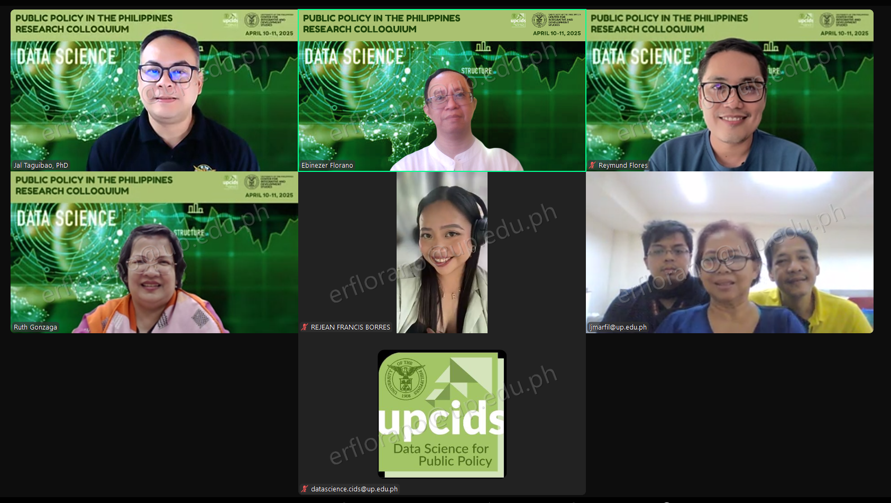
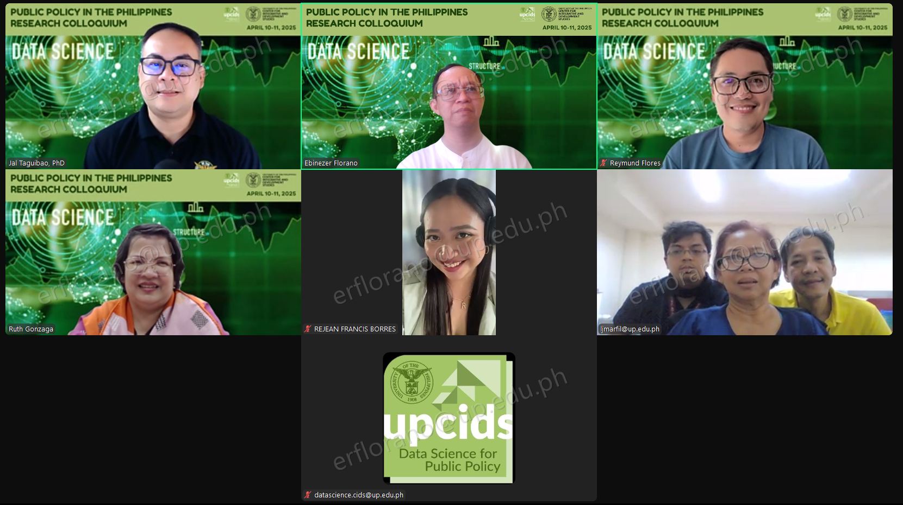
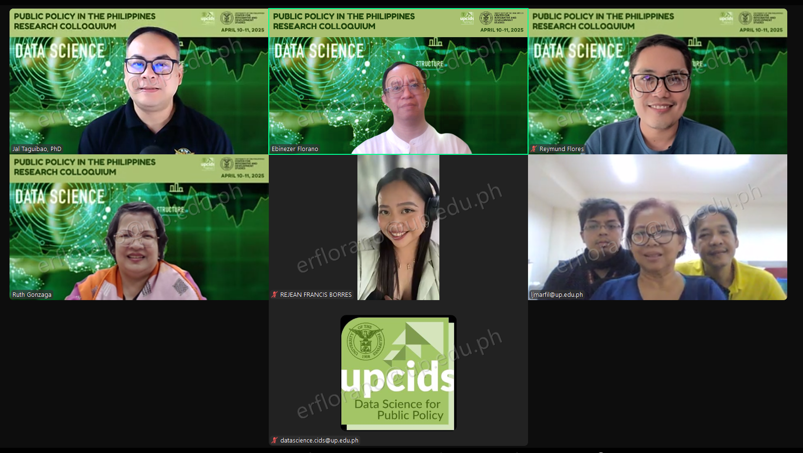
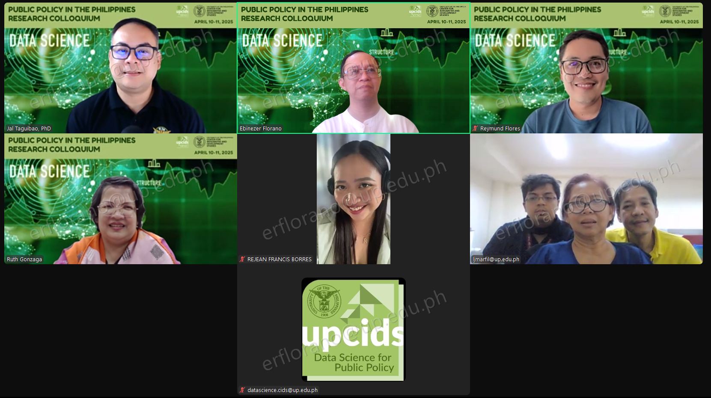

{% extends "base.html" %}
{% block title %}
Data Science for Public Policy Program - 2025 Events
{% endblock %}
{% block head %}
{% endblock %}
{% block content %}
Events
Advanced Bootcamp: Explainable Artificial Intelligence (XAI) for Public Policy: Explainable AI, AI Ethics, and GPT for Public Policy December 8-12, 2025 SOLAIR, UP Diliman
XAI for NGOs October 15-17, 2025 Eurotel, North EDSA, Quezon City
Intermediate Bootcamp: xAi for Public Policy: AI Informed Human Directed Public Policy Making September 22-26, 2025 SOLAIR, UP Diliman
2nd Basic Bootcamp: Explainable AI for Public Policy September 1-5, 2025 SOLAIR, UP Diliman
1st Basic Bootcamp: Explainable AI for Public Policy July 14-18, 2025 UP CIDS Main Hall
Public Policy in the Philippines: Research Colloquium April 10-11, 2025 UP CIDS | Zoom


 


